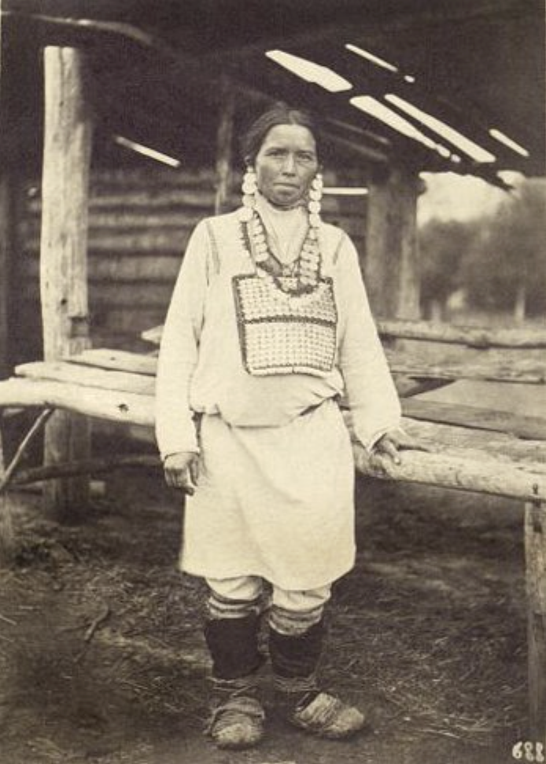

Чувашский язык — уникальная ветвь тюркских языков, являющаяся единственным представителем булгарской ветви. Входит в Волжско-Камский языковой союз. Исследования А. В. Дыбо указывают на начало распада пратюркского языка примерно в период от −30 до 0 гг. до н. э., связывая это с миграцией части хунну на запад. По словам итальянского историка Игоря де Ракевильц, чувашский язык отличается от других тюркских языков настолько сильно, что некоторые ученые рассматривают его как независимый член алтайской семьи. Однако российский лингвист Олег Мудрак утверждает, что чувашский язык, хотя и сильно отличается лексически, грамматически и фонетически, является несомненно тюркским языком, представляя собой первый выброс тюркского элемента на запад.
Чувашская мифология описывает мир, состоящий из трёх частей: верхний, средний (мир людей) и нижний мир. Земля квадратная, чуваши живут в её центре. Мировое древо поддерживает небосвод на четырёх столбах. Богатыри-защитники помещены в каждый угол Земли. Океан омывает берега, а конец света наступит, когда земля достигнет чувашей или исчезнет чувашский народ. Верховный бог Турă находится в верхнем мире, где также пребывают души не родившихся детей - Пÿлех. После смерти праведной души переходит по узкому мосту на радугу и затем в верхний мир. Влияние христианства добавило представления о нижнем мире, где души грешников варятся в котлах, поддерживаемых слугами шуйтана из ислама. Попадание в нижний мир осуществляется через щели, называемые "какӑр".
Основой чувашской культуры является традиционная вера, наложившаяся и на другие религиозные влияния. Верховный бог Тура не изображается антропоморфно, мир населён духами. Религиозные обряды связаны с аграрными праздниками, отмечая циклы событий в сельской жизни. Ритуальным напитком является молитвенное пиво сăра. Имеется поклонение святыням, в том числе деревенским киреметям. Верования чувашей также отражают влияние ислама и других религий. В XVIII веке чуваши подверглись массовой христианизации в результате указа о "Насильственном крещении народов Поволжья".
Древние предки чувашей обладали экстраординарными навыками земледелия и садоводства. Они сеяли пшеницу, ячмень, просо, горох, полбу, чечевицу, коноплю, лён, рожь, бобы на своих землях, используя трёхпольную систему. Это значит, что одну часть поля засевали яровыми культурами, вторую часть засевали озимыми культурами, а третью часть просто вспахивали, не засеивая, — она отдыхала. На другой год (или через 2—3 года) поля меняли. Землю пахали тяжёлыми плугами, а для повторной обработки использовали более лёгкие орудия, а позднее — соху «русского типа». Зерновые культуры шли людям в пищу в виде крупы, муки, солода. Солома использовалась при изготовлении крыш домов, глиняных кирпичей, для подстилки и кормов животным.
Животноводство остаётся ведущей отраслью сельского хозяйства республики. В хозяйствах Чувашии выращивают крупный рогатый скот, свиней, овец, птиц. В некоторых хозяйствах сохранилось коневодство. В структуре животноводства преобладает крупный рогатый скот, который имеет мясо-молочное направление. В сельскохозяйственных предприятиях республики на 2000 г. насчитывалось крупного рогатого скота около 212 тыс. голов, в том числе коров — более 70 тыс., свиней — около 199 тыс. и овец — 39 тыс. В производстве занято около 113 тыс. чувашей, что составляет около 20 % всех работающих в отраслях экономики Чувашии. Всего в республике насчитывается 466 сельскохозяйственных предприятий, которые представлены различными формами собственности (кооперативные хозяйства, ТОО, ЗАО, ОАО, муниципальные предприятия и др.), а также 1150 крестьянских (фермерских) хозяйств.
Издревле у чувашей было высоко развито ремесло. Оно выделилось в отдельные отрасли производства, то есть мастера могли зарабатывать себе на жизнь только своим делом и им не надо было выращивать хлеб и скот. Ремесленники выплавляли металл, в том числе сталь повышенного качества и изготавливали орудия труда, разнообразные части повозок и телег, замки, гвозди, посуду, украшения, вооружение и т. д. Чувашские мастера умели делать «самозатачивающиеся» долота и ножи — между двух полос мягкого железа помещали слой из закалённой, крепкой стали. Во время эксплуатации железные полосы изнашивались быстрее, чем стальной слой, поэтому он как бы всегда выступал над поверхностью и служил режущей кромкой.
Характерной чертой чувашской избы (пӳрт) является наличие отделки луковицей вдоль конька крыши и больших въездных ворот (мӑн алӑк).
Традиционная одежда чувашей обладала разнообразными формами и материалами. Она не только служила утилитарной цели, защищая от внешних воздействий, но также обладала символическим и ритуальным значением. Материалы включали холст, домотканое сукно, покупные ткани, войлок и кожу. Основные виды тканей создавались в домашних условиях из конопли, льна и овечьей шерсти. Женская одежда включала различные элементы: кӗпе (рубашка), шупӑр (халат), чӗр ҫитти (передник), пиҫиххи (пояс), а также разнообразные украшения. Мужчины носили кӗпе, йӗм (штаны), атӑ (сапоги), калпак (шляпу), а жених дополнял свой наряд ритуальными принадлежностями, такими как ҫулӗк и кӗрӳ тутри. В дополнение к одежде использовались украшения с монетами, бусами и бисерным шитьём, включая теветь, сӑрка, алка, шӑрҫа, мӑя, ама и многие другие элементы.
 Традиционный костюм верховых чувашей. Конец XIX в.